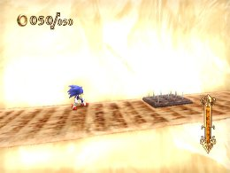
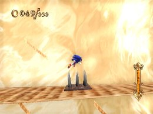

Jumps
The Basics
Jumps are one of the most important elements in this game, and can be divided into three different types of jumps:
“Small jumps” can be performed by tapping the 2 Button, and are useful for avoiding low obstacles and traps that thrust spikes from the floor.

“Medium jumps” can be performed by pressing and holding the 2 Button for a moderate amount of time, and are commonly used to reach higher platforms or when performing Homing Attacks.
“Large jumps” can be performed by pressing and holding the 2 Button long enough to fully charge your jump, and can be used to avoid high obstacles and reach high places.
At times, you will notice that Sonic’s speed drops after you land from a medium or large jump, or a Homing Attack. If he starts walking slowly, it will take some time to build up speed again, so you can use the small jump to help build speed faster.
 RSS
RSS